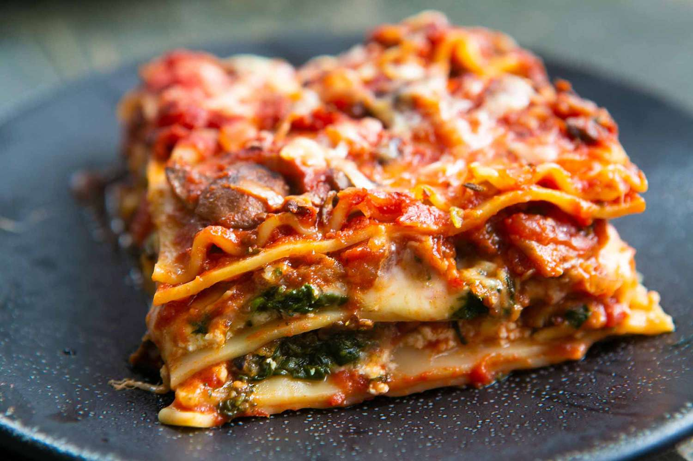

Lasagna

Vegetarian lasagna is a modern adaptation of a traditional italian dish
Ingredients
- Fresh tomatoes
- Flour
- Water
- Salt
- Zucchini
- Basil
- Garlic
Steps
- Prepare the sauce by putting the tomatoes and garlic in the oven until baked and blend
- Make the lasagne by mixing flour and water, then stretching the dough out
- Cook the lasagne in boiling water
- Sautee the zucchini with garlic
- Assemble the lasagne by making a sauce floor, then lasagne, then zucchini and repeat
- Bake in the oven for 15 minutes